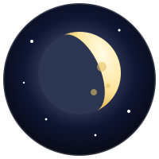

月の 形は どうして かわる？ 月は いつも 太陽の がわが 光って いるよ。4つの ミッションに ちょうせんしよう！
むずかしかったら、じっけんしつで 月を じゆうに うごかしてみよう。形が かわる ひみつが 目で 見えるよ。
小学4年「月の形と動き」・6年「月と太陽」・中学3年「地球と宇宙」
◀ あたやさいさいゲームランドへ もどる新月の 月が、太陽の まえを ぴったり 通ると、太陽が 月に かくされる。これが 日食。月の かげは 小さいので、かげが おちた せまい ところでだけ 見える。
満月の 月が、地球の かげの 中に 入ると 月食。かげの 中の 月は まっくらに ならず、赤っぽく 見える。月が 出ている ところなら どこからでも 見える。
月の 通り道は、すこし（5度ほど）かたむいて いる。だから ふつうは、新月でも 満月でも 3つが ぴったり 一直線には ならない。ならぶのは 1年に 2回ほどの 時期だけ。